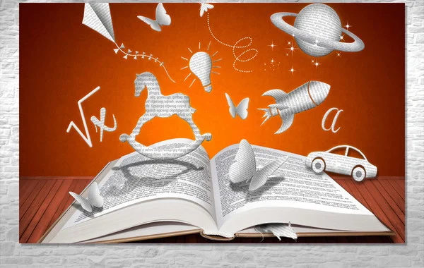

Todos sabemos que a leitura é muito importante para o desenvolvimento dos indivíduos, desde pequenos. Ela está presente em nossas vidas desde que nascemos e com o tempo desenvolve - se. Engloba a criatividade, a atenção e a cognição. Além de nos proporcionar momentos de lazer e prazer ao desfrutarmos de rápidas "viagens" à lugares desconhecidos pelos quais nunca poderíamos chegar no mundo real. O hábito de leitura aprimora a saúde do cérebro, fortalecendo nosso pensamento crítico e analítico, aumentando nossa capacidade de interpretação, quantidade de vocabulário e principalmente, a memória.
Criar o hábito de leitura não é simples! Mas, conhecer a nós mesmos como indíviduos e entendermos nossa personalidade, faz com que busquemos por nossos gostos e nos apaixonemos por "mundos em letras". Já dizia George R.R Martin: "Eu vivi mil vidas e amei mil amores. Andei por mundos distantes e vi o fim dos tempos. Porque eu li." Então, aqui vai uma pequena lista de cinco livros que marcaram minha caminhada por estes mundos.
1. Em Seus Passos o que faria Jesus? - Charles Sheldon; 2. Coleção, As Crônicas de Nárnia - Cs. Lewis; 3. Coleção: A Seleção - Kiera Cass; 4. Coleção: Cris e Ted - Robin Jones Gunn; 5. Enquanto estivermos juntos - Jeremy camp.
